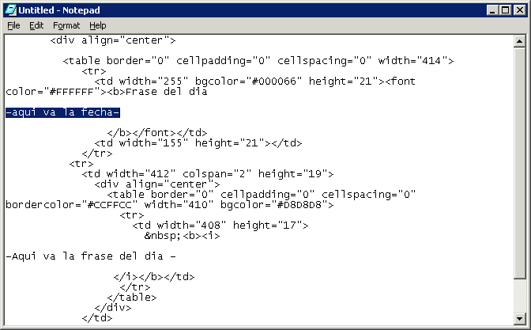

Tarea 13 - PHP
Este lenguaje de programación se utilizaba principalmente para crear la interfaz HTML y el servidor de una página web o aplicación web.
Actualmente se sigue utilizando pero ahora esta más enfocado en crear exclusivamente el servidor de las aplicaciones. La interfaz se ha delegado a tecnologias Front-end.
Etiquetas PHP
Cuando PHP analiza un archivo busca etiquetas de apertura y cierre, que
normalmente son
, e indican a PHP cuando empezar y terminar de interpretar
código. PHP también permite la etiqueta de apertura `
Otra forma de incluir código es con el elemento script: .
Si un archivo es enteramente en PHP, es preferible omitir la etiqueta de cierre al final del archivo ?>.
Escape de HTML
Cualquier código fuera de las etiquetas de apertura y cierre es ignorado por el intérprete de PHP. Esto permite embeber PHP en HTML:
<p> Texto ignorado por PHP.<p>
<?php echo 'Texto que va a ser interpretado por PHP.' >
<p>Texto también ignorado.<p>
Cuando se hace escape en medio de una condición, el intérprete tendrá en cuenta el código HTML sólo si ésta se cumple, de lo contrario saltará el contenido:
<?php if ($expression == true): ?>
Se mostrará si $expression es true.
<?php else: ?>
Sino, se mostrará este contenido.
<?php endif; ?>
Para imprimir textos largos este método es más eficiente que enviar el texto a través de echo o print.
Instrucciones de separacion
Como en C o en Perl, PHP requiere que cada instrucción se termine con punto y coma ";" al final de cada sentencia. La etiqueta de cierre de un bloque de código PHP automáticamente implica el punto y coma, por lo que no es necesario incluirlo al final:
<?php echo 'Esto es una prueba' ?>
A veces es recomendable este método para evitar espacios en blanco al final, especialmente cuando se usan include, require o output buffering.
Comentarios
El estilo de comentarios en PHP es como el de C, C++ o Perl:
<?php echo 'Hola' ; // Esto es un comentario de una línea
/* Esto es
un comentario
en varias líneas */
echo 'Más código'; # Esto es otro comentario de una línea
?>
Los comentarios de varias líneas finalizan con el primer */:
/*
echo 'Esto es un comentario'; /* Más comentario */
Paradigma
PHP es un lenguaje de programación cuya sintaxis es heredera de C, pero a diferencia de este último, PHP es un lenguaje de tipado dinámico, multiparadigma e interpretado.Se ha dotado a PHP con un soporte amplio de paradigmas de programación.
Descargar PHP aquí
Ejemplo de código PHP
